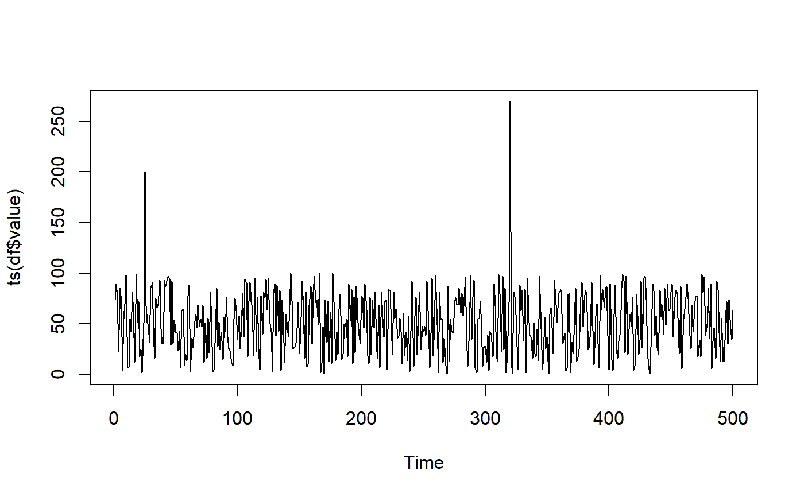

uv_tsout_ens.RdPerforms univariate time series outlier ensemble.
uv_tsout_ens(x, frequency = 1, dates = NULL)
| x | A univariate time series as either a |
|---|---|
| frequency | The frequency associated with the time series |
| dates | The dates associated with the time series. This is needed for the package |
A list with the following components:
outliersThe outliers detected, repeated if detected by multiple outlier methods.
forcastOutThe outliers detected R package forecast.
tsoutliersOutThe outliers detected R package tsoutliers.
otsadOutThe outliers detected R package otsad.
anomalizeOutThe outliers detected R package anomalize.
outmatA matrix containing zeros and ones, with ones representing time points identified as outliers from different methods.
set.seed(100) n <- 500 x <- sample(1:100, n, replace=TRUE) x[25] <- 200 x[320] <- 270 df <- data.frame(timestamp=1:n, value=x) plot(ts(df$value))out <- uv_tsout_ens(x)#> #>#>#>out#> $outliers #> [1] 320 320 25 320 #> #> $forcastOut #> [1] 320 #> #> $tsoutliersOut #> [1] 320 #> #> $otsadOut #> integer(0) #> #> $anomalizeOut #> [1] 25 320 #> #> $outmat #> forecast tsoutliers otsad anomalize #> [1,] 0 0 0 0 #> [2,] 0 0 0 0 #> [3,] 0 0 0 0 #> [4,] 0 0 0 0 #> [5,] 0 0 0 0 #> [6,] 0 0 0 0 #> [7,] 0 0 0 0 #> [8,] 0 0 0 0 #> [9,] 0 0 0 0 #> [10,] 0 0 0 0 #> [11,] 0 0 0 0 #> [12,] 0 0 0 0 #> [13,] 0 0 0 0 #> [14,] 0 0 0 0 #> [15,] 0 0 0 0 #> [16,] 0 0 0 0 #> [17,] 0 0 0 0 #> [18,] 0 0 0 0 #> [19,] 0 0 0 0 #> [20,] 0 0 0 0 #> [21,] 0 0 0 0 #> [22,] 0 0 0 0 #> [23,] 0 0 0 0 #> [24,] 0 0 0 0 #> [25,] 0 0 0 1 #> [26,] 0 0 0 0 #> [27,] 0 0 0 0 #> [28,] 0 0 0 0 #> [29,] 0 0 0 0 #> [30,] 0 0 0 0 #> [31,] 0 0 0 0 #> [32,] 0 0 0 0 #> [33,] 0 0 0 0 #> [34,] 0 0 0 0 #> [35,] 0 0 0 0 #> [36,] 0 0 0 0 #> [37,] 0 0 0 0 #> [38,] 0 0 0 0 #> [39,] 0 0 0 0 #> [40,] 0 0 0 0 #> [41,] 0 0 0 0 #> [42,] 0 0 0 0 #> [43,] 0 0 0 0 #> [44,] 0 0 0 0 #> [45,] 0 0 0 0 #> [46,] 0 0 0 0 #> [47,] 0 0 0 0 #> [48,] 0 0 0 0 #> [49,] 0 0 0 0 #> [50,] 0 0 0 0 #> [51,] 0 0 0 0 #> [52,] 0 0 0 0 #> [53,] 0 0 0 0 #> [54,] 0 0 0 0 #> [55,] 0 0 0 0 #> [56,] 0 0 0 0 #> [57,] 0 0 0 0 #> [58,] 0 0 0 0 #> [59,] 0 0 0 0 #> [60,] 0 0 0 0 #> [61,] 0 0 0 0 #> [62,] 0 0 0 0 #> [63,] 0 0 0 0 #> [64,] 0 0 0 0 #> [65,] 0 0 0 0 #> [66,] 0 0 0 0 #> [67,] 0 0 0 0 #> [68,] 0 0 0 0 #> [69,] 0 0 0 0 #> [70,] 0 0 0 0 #> [71,] 0 0 0 0 #> [72,] 0 0 0 0 #> [73,] 0 0 0 0 #> [74,] 0 0 0 0 #> [75,] 0 0 0 0 #> [76,] 0 0 0 0 #> [77,] 0 0 0 0 #> [78,] 0 0 0 0 #> [79,] 0 0 0 0 #> [80,] 0 0 0 0 #> [81,] 0 0 0 0 #> [82,] 0 0 0 0 #> [83,] 0 0 0 0 #> [84,] 0 0 0 0 #> [85,] 0 0 0 0 #> [86,] 0 0 0 0 #> [87,] 0 0 0 0 #> [88,] 0 0 0 0 #> [89,] 0 0 0 0 #> [90,] 0 0 0 0 #> [91,] 0 0 0 0 #> [92,] 0 0 0 0 #> [93,] 0 0 0 0 #> [94,] 0 0 0 0 #> [95,] 0 0 0 0 #> [96,] 0 0 0 0 #> [97,] 0 0 0 0 #> [98,] 0 0 0 0 #> [99,] 0 0 0 0 #> [100,] 0 0 0 0 #> [101,] 0 0 0 0 #> [102,] 0 0 0 0 #> [103,] 0 0 0 0 #> [104,] 0 0 0 0 #> [105,] 0 0 0 0 #> [106,] 0 0 0 0 #> [107,] 0 0 0 0 #> [108,] 0 0 0 0 #> [109,] 0 0 0 0 #> [110,] 0 0 0 0 #> [111,] 0 0 0 0 #> [112,] 0 0 0 0 #> [113,] 0 0 0 0 #> [114,] 0 0 0 0 #> [115,] 0 0 0 0 #> [116,] 0 0 0 0 #> [117,] 0 0 0 0 #> [118,] 0 0 0 0 #> [119,] 0 0 0 0 #> [120,] 0 0 0 0 #> [121,] 0 0 0 0 #> [122,] 0 0 0 0 #> [123,] 0 0 0 0 #> [124,] 0 0 0 0 #> [125,] 0 0 0 0 #> [126,] 0 0 0 0 #> [127,] 0 0 0 0 #> [128,] 0 0 0 0 #> [129,] 0 0 0 0 #> [130,] 0 0 0 0 #> [131,] 0 0 0 0 #> [132,] 0 0 0 0 #> [133,] 0 0 0 0 #> [134,] 0 0 0 0 #> [135,] 0 0 0 0 #> [136,] 0 0 0 0 #> [137,] 0 0 0 0 #> [138,] 0 0 0 0 #> [139,] 0 0 0 0 #> [140,] 0 0 0 0 #> [141,] 0 0 0 0 #> [142,] 0 0 0 0 #> [143,] 0 0 0 0 #> [144,] 0 0 0 0 #> [145,] 0 0 0 0 #> [146,] 0 0 0 0 #> [147,] 0 0 0 0 #> [148,] 0 0 0 0 #> [149,] 0 0 0 0 #> [150,] 0 0 0 0 #> [151,] 0 0 0 0 #> [152,] 0 0 0 0 #> [153,] 0 0 0 0 #> [154,] 0 0 0 0 #> [155,] 0 0 0 0 #> [156,] 0 0 0 0 #> [157,] 0 0 0 0 #> [158,] 0 0 0 0 #> [159,] 0 0 0 0 #> [160,] 0 0 0 0 #> [161,] 0 0 0 0 #> [162,] 0 0 0 0 #> [163,] 0 0 0 0 #> [164,] 0 0 0 0 #> [165,] 0 0 0 0 #> [166,] 0 0 0 0 #> [167,] 0 0 0 0 #> [168,] 0 0 0 0 #> [169,] 0 0 0 0 #> [170,] 0 0 0 0 #> [171,] 0 0 0 0 #> [172,] 0 0 0 0 #> [173,] 0 0 0 0 #> [174,] 0 0 0 0 #> [175,] 0 0 0 0 #> [176,] 0 0 0 0 #> [177,] 0 0 0 0 #> [178,] 0 0 0 0 #> [179,] 0 0 0 0 #> [180,] 0 0 0 0 #> [181,] 0 0 0 0 #> [182,] 0 0 0 0 #> [183,] 0 0 0 0 #> [184,] 0 0 0 0 #> [185,] 0 0 0 0 #> [186,] 0 0 0 0 #> [187,] 0 0 0 0 #> [188,] 0 0 0 0 #> [189,] 0 0 0 0 #> [190,] 0 0 0 0 #> [191,] 0 0 0 0 #> [192,] 0 0 0 0 #> [193,] 0 0 0 0 #> [194,] 0 0 0 0 #> [195,] 0 0 0 0 #> [196,] 0 0 0 0 #> [197,] 0 0 0 0 #> [198,] 0 0 0 0 #> [199,] 0 0 0 0 #> [200,] 0 0 0 0 #> [201,] 0 0 0 0 #> [202,] 0 0 0 0 #> [203,] 0 0 0 0 #> [204,] 0 0 0 0 #> [205,] 0 0 0 0 #> [206,] 0 0 0 0 #> [207,] 0 0 0 0 #> [208,] 0 0 0 0 #> [209,] 0 0 0 0 #> [210,] 0 0 0 0 #> [211,] 0 0 0 0 #> [212,] 0 0 0 0 #> [213,] 0 0 0 0 #> [214,] 0 0 0 0 #> [215,] 0 0 0 0 #> [216,] 0 0 0 0 #> [217,] 0 0 0 0 #> [218,] 0 0 0 0 #> [219,] 0 0 0 0 #> [220,] 0 0 0 0 #> [221,] 0 0 0 0 #> [222,] 0 0 0 0 #> [223,] 0 0 0 0 #> [224,] 0 0 0 0 #> [225,] 0 0 0 0 #> [226,] 0 0 0 0 #> [227,] 0 0 0 0 #> [228,] 0 0 0 0 #> [229,] 0 0 0 0 #> [230,] 0 0 0 0 #> [231,] 0 0 0 0 #> [232,] 0 0 0 0 #> [233,] 0 0 0 0 #> [234,] 0 0 0 0 #> [235,] 0 0 0 0 #> [236,] 0 0 0 0 #> [237,] 0 0 0 0 #> [238,] 0 0 0 0 #> [239,] 0 0 0 0 #> [240,] 0 0 0 0 #> [241,] 0 0 0 0 #> [242,] 0 0 0 0 #> [243,] 0 0 0 0 #> [244,] 0 0 0 0 #> [245,] 0 0 0 0 #> [246,] 0 0 0 0 #> [247,] 0 0 0 0 #> [248,] 0 0 0 0 #> [249,] 0 0 0 0 #> [250,] 0 0 0 0 #> [251,] 0 0 0 0 #> [252,] 0 0 0 0 #> [253,] 0 0 0 0 #> [254,] 0 0 0 0 #> [255,] 0 0 0 0 #> [256,] 0 0 0 0 #> [257,] 0 0 0 0 #> [258,] 0 0 0 0 #> [259,] 0 0 0 0 #> [260,] 0 0 0 0 #> [261,] 0 0 0 0 #> [262,] 0 0 0 0 #> [263,] 0 0 0 0 #> [264,] 0 0 0 0 #> [265,] 0 0 0 0 #> [266,] 0 0 0 0 #> [267,] 0 0 0 0 #> [268,] 0 0 0 0 #> [269,] 0 0 0 0 #> [270,] 0 0 0 0 #> [271,] 0 0 0 0 #> [272,] 0 0 0 0 #> [273,] 0 0 0 0 #> [274,] 0 0 0 0 #> [275,] 0 0 0 0 #> [276,] 0 0 0 0 #> [277,] 0 0 0 0 #> [278,] 0 0 0 0 #> [279,] 0 0 0 0 #> [280,] 0 0 0 0 #> [281,] 0 0 0 0 #> [282,] 0 0 0 0 #> [283,] 0 0 0 0 #> [284,] 0 0 0 0 #> [285,] 0 0 0 0 #> [286,] 0 0 0 0 #> [287,] 0 0 0 0 #> [288,] 0 0 0 0 #> [289,] 0 0 0 0 #> [290,] 0 0 0 0 #> [291,] 0 0 0 0 #> [292,] 0 0 0 0 #> [293,] 0 0 0 0 #> [294,] 0 0 0 0 #> [295,] 0 0 0 0 #> [296,] 0 0 0 0 #> [297,] 0 0 0 0 #> [298,] 0 0 0 0 #> [299,] 0 0 0 0 #> [300,] 0 0 0 0 #> [301,] 0 0 0 0 #> [302,] 0 0 0 0 #> [303,] 0 0 0 0 #> [304,] 0 0 0 0 #> [305,] 0 0 0 0 #> [306,] 0 0 0 0 #> [307,] 0 0 0 0 #> [308,] 0 0 0 0 #> [309,] 0 0 0 0 #> [310,] 0 0 0 0 #> [311,] 0 0 0 0 #> [312,] 0 0 0 0 #> [313,] 0 0 0 0 #> [314,] 0 0 0 0 #> [315,] 0 0 0 0 #> [316,] 0 0 0 0 #> [317,] 0 0 0 0 #> [318,] 0 0 0 0 #> [319,] 0 0 0 0 #> [320,] 1 1 0 1 #> [321,] 0 0 0 0 #> [322,] 0 0 0 0 #> [323,] 0 0 0 0 #> [324,] 0 0 0 0 #> [325,] 0 0 0 0 #> [326,] 0 0 0 0 #> [327,] 0 0 0 0 #> [328,] 0 0 0 0 #> [329,] 0 0 0 0 #> [330,] 0 0 0 0 #> [331,] 0 0 0 0 #> [332,] 0 0 0 0 #> [333,] 0 0 0 0 #> [334,] 0 0 0 0 #> [335,] 0 0 0 0 #> [336,] 0 0 0 0 #> [337,] 0 0 0 0 #> [338,] 0 0 0 0 #> [339,] 0 0 0 0 #> [340,] 0 0 0 0 #> [341,] 0 0 0 0 #> [342,] 0 0 0 0 #> [343,] 0 0 0 0 #> [344,] 0 0 0 0 #> [345,] 0 0 0 0 #> [346,] 0 0 0 0 #> [347,] 0 0 0 0 #> [348,] 0 0 0 0 #> [349,] 0 0 0 0 #> [350,] 0 0 0 0 #> [351,] 0 0 0 0 #> [352,] 0 0 0 0 #> [353,] 0 0 0 0 #> [354,] 0 0 0 0 #> [355,] 0 0 0 0 #> [356,] 0 0 0 0 #> [357,] 0 0 0 0 #> [358,] 0 0 0 0 #> [359,] 0 0 0 0 #> [360,] 0 0 0 0 #> [361,] 0 0 0 0 #> [362,] 0 0 0 0 #> [363,] 0 0 0 0 #> [364,] 0 0 0 0 #> [365,] 0 0 0 0 #> [366,] 0 0 0 0 #> [367,] 0 0 0 0 #> [368,] 0 0 0 0 #> [369,] 0 0 0 0 #> [370,] 0 0 0 0 #> [371,] 0 0 0 0 #> [372,] 0 0 0 0 #> [373,] 0 0 0 0 #> [374,] 0 0 0 0 #> [375,] 0 0 0 0 #> [376,] 0 0 0 0 #> [377,] 0 0 0 0 #> [378,] 0 0 0 0 #> [379,] 0 0 0 0 #> [380,] 0 0 0 0 #> [381,] 0 0 0 0 #> [382,] 0 0 0 0 #> [383,] 0 0 0 0 #> [384,] 0 0 0 0 #> [385,] 0 0 0 0 #> [386,] 0 0 0 0 #> [387,] 0 0 0 0 #> [388,] 0 0 0 0 #> [389,] 0 0 0 0 #> [390,] 0 0 0 0 #> [391,] 0 0 0 0 #> [392,] 0 0 0 0 #> [393,] 0 0 0 0 #> [394,] 0 0 0 0 #> [395,] 0 0 0 0 #> [396,] 0 0 0 0 #> [397,] 0 0 0 0 #> [398,] 0 0 0 0 #> [399,] 0 0 0 0 #> [400,] 0 0 0 0 #> [401,] 0 0 0 0 #> [402,] 0 0 0 0 #> [403,] 0 0 0 0 #> [404,] 0 0 0 0 #> [405,] 0 0 0 0 #> [406,] 0 0 0 0 #> [407,] 0 0 0 0 #> [408,] 0 0 0 0 #> [409,] 0 0 0 0 #> [410,] 0 0 0 0 #> [411,] 0 0 0 0 #> [412,] 0 0 0 0 #> [413,] 0 0 0 0 #> [414,] 0 0 0 0 #> [415,] 0 0 0 0 #> [416,] 0 0 0 0 #> [417,] 0 0 0 0 #> [418,] 0 0 0 0 #> [419,] 0 0 0 0 #> [420,] 0 0 0 0 #> [421,] 0 0 0 0 #> [422,] 0 0 0 0 #> [423,] 0 0 0 0 #> [424,] 0 0 0 0 #> [425,] 0 0 0 0 #> [426,] 0 0 0 0 #> [427,] 0 0 0 0 #> [428,] 0 0 0 0 #> [429,] 0 0 0 0 #> [430,] 0 0 0 0 #> [431,] 0 0 0 0 #> [432,] 0 0 0 0 #> [433,] 0 0 0 0 #> [434,] 0 0 0 0 #> [435,] 0 0 0 0 #> [436,] 0 0 0 0 #> [437,] 0 0 0 0 #> [438,] 0 0 0 0 #> [439,] 0 0 0 0 #> [440,] 0 0 0 0 #> [441,] 0 0 0 0 #> [442,] 0 0 0 0 #> [443,] 0 0 0 0 #> [444,] 0 0 0 0 #> [445,] 0 0 0 0 #> [446,] 0 0 0 0 #> [447,] 0 0 0 0 #> [448,] 0 0 0 0 #> [449,] 0 0 0 0 #> [450,] 0 0 0 0 #> [451,] 0 0 0 0 #> [452,] 0 0 0 0 #> [453,] 0 0 0 0 #> [454,] 0 0 0 0 #> [455,] 0 0 0 0 #> [456,] 0 0 0 0 #> [457,] 0 0 0 0 #> [458,] 0 0 0 0 #> [459,] 0 0 0 0 #> [460,] 0 0 0 0 #> [461,] 0 0 0 0 #> [462,] 0 0 0 0 #> [463,] 0 0 0 0 #> [464,] 0 0 0 0 #> [465,] 0 0 0 0 #> [466,] 0 0 0 0 #> [467,] 0 0 0 0 #> [468,] 0 0 0 0 #> [469,] 0 0 0 0 #> [470,] 0 0 0 0 #> [471,] 0 0 0 0 #> [472,] 0 0 0 0 #> [473,] 0 0 0 0 #> [474,] 0 0 0 0 #> [475,] 0 0 0 0 #> [476,] 0 0 0 0 #> [477,] 0 0 0 0 #> [478,] 0 0 0 0 #> [479,] 0 0 0 0 #> [480,] 0 0 0 0 #> [481,] 0 0 0 0 #> [482,] 0 0 0 0 #> [483,] 0 0 0 0 #> [484,] 0 0 0 0 #> [485,] 0 0 0 0 #> [486,] 0 0 0 0 #> [487,] 0 0 0 0 #> [488,] 0 0 0 0 #> [489,] 0 0 0 0 #> [490,] 0 0 0 0 #> [491,] 0 0 0 0 #> [492,] 0 0 0 0 #> [493,] 0 0 0 0 #> [494,] 0 0 0 0 #> [495,] 0 0 0 0 #> [496,] 0 0 0 0 #> [497,] 0 0 0 0 #> [498,] 0 0 0 0 #> [499,] 0 0 0 0 #> [500,] 0 0 0 0 #>